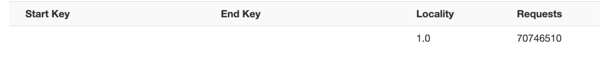
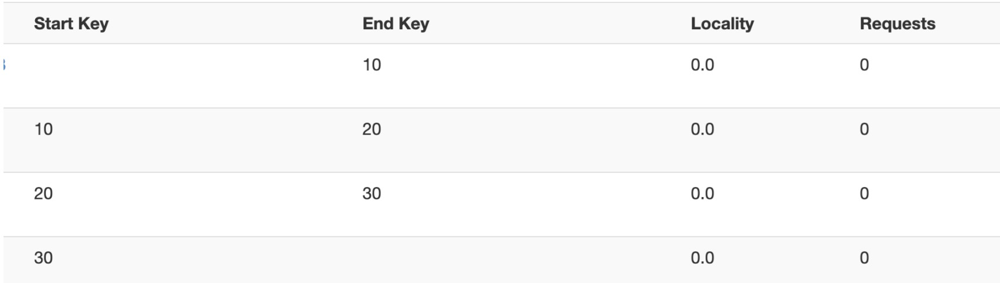
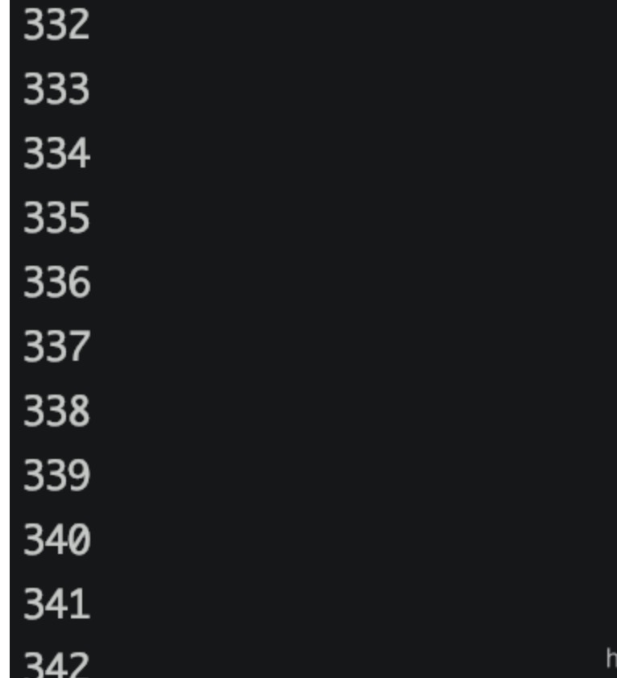
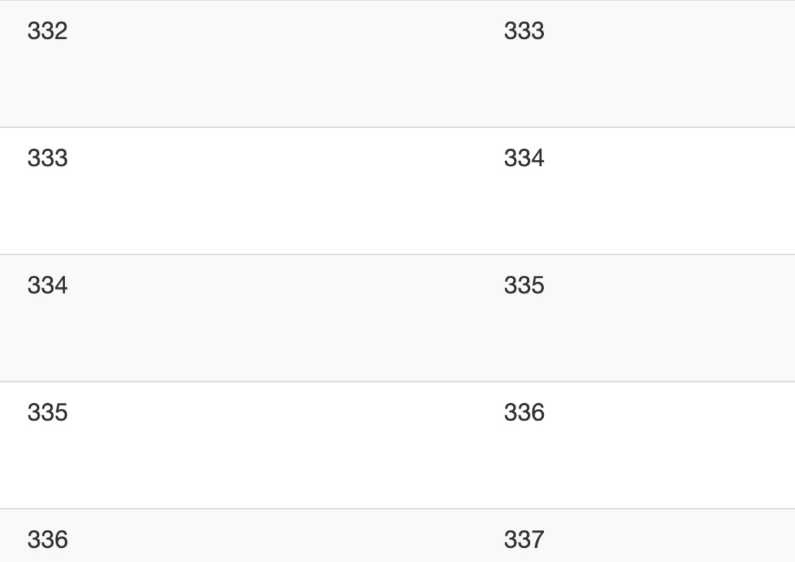

最近公司在做ip维度表，数据量比较大，上亿条数据了，拿hbase存储，进行实时关联。发现ip存到region上倾斜的比较严重，考虑到基数比较大，后期增量相对比较少，可以做一个预分区，使数据分布均衡，借此机会，从网上搜集了一下资料，总结一下常见的解决方案。
热点与数据倾斜
热点：
热点发生在大量的client直接访问集群的一个或极少数个节点（访问可能是读，写或者其他操作。
大量访问会使热点region所在的单个机器超出自身承受能力，引起性能下降甚至region不可用，这也会影响同一个RegionServer上的其他region，由于主机无法服务其他region的请求，造成资源浪费。设计良好的数据访问模式以使集群被充分，均衡的利用。
数据倾斜：
Hbase可以被划分为多个Region，但是默认创建时只有一个Region分布在集群的一个节点上，数据一开始时都集中在这个Region，也就是集中在这一个节点上，就算region存储达到临界值时被划分，数据也是存储在少数节点上。这就是数据倾斜。
原因分析
- HBase中的行是按照rowkey的字典顺序排序的，这种设计优化了scan操作，可以将相关的行以及会被一起读取的行存取在临近位置，便于scan。
- rowkey设计是热点的源头。
HBase中，表会被划分为1…n个Region，被托管在RegionServer中。Region有二个重要的属性: StartKey与EndKey
表示这个Region维护的rowKey范围，当我们要读/写数据时，如果rowKey落在某个start-end key范围内，那么就会定位到目标 region并且读/写到相关的数据。
默认的情况下，创建一张表是，只有1个region，
start-end key没有边界，所有数据都在这个region里装，然而，当数据越来越多，region的size越来越大时，大到一定的阀值，hbase认为再往这个region里塞数据已经不合适了，就会找到一个midKey将region一分为二，成为2个region,这个过程称为分裂(region-split)。而midKey则为这二个region的临界（这个中间值这里不作讨论是如何被选取的）。 此时，我们假设假设rowkey小于midKey则为阴被塞到1区，大于等于midKey则会被塞到2区，如果 rowkey还是顺序增大的，那数据就总会往2区里面写数据，而1区现在处于一个被冷落的状态，而且是半满的。2区的数据满了 会被再次分裂成2个区，如此不断产生被冷落而且不满的Region，当然，这些region有提供数据查询的功能。这种设计是分布式系统一个很大的弊端，而且这样导致数据倾斜和热点问题，从而导致集群的资源得不到很好的利用。
解决方案
预分区
预分区的必要性
HBase默认建表时有一个region，这个region的rowkey是没有边界的，即没有startkey和endkey，在数据写入时，所有数据都会写入这个默认的region，当一个region中数据超过阈值时（默认10G），此region已经不能承受不断增长的数据量，会进行split，分成2个region。在此过程中，会产生两个问题：
- 我们的数据会不断的往一个region上写,会有写热点问题。
- region split会消耗宝贵的集群I/O资源。如果在任务执行时region分裂，会导致任务失败
基于此我们可以控制在建表的时候，创建多个空region，并确定每个region的起始和终止rowky，这样只要我们的rowkey设计能均匀的命中各个region，就不会存在写热点问题。自然split的几率也会大大降低。当然随着数据量的不断增长，该split的还是要进行split。像这样预先创建hbase表分区的方式，称之为预分区
示例
首先看没有预分区的：
一个region里面就保存了7000w（虽然7000w对hbase来说是小case）的数据，读写压力全在这一个region上，会很容易造成热点问题

使用Hbase shell进行预分区
前面说到了rowkey的排列是根据字典排序，所以rowkey寻址的时候是和startkey、endkey进行比较，在字典排序在哪个region的startkey、endkey之间，就落在哪个region
create ‘t1’,’f1’,SPLITS => [‘10’,’20’,’30’]

四个分区，rowkey如果是‘0232534’，就落在第一个分区，‘13003424’落在第二个分区
hbase>create ‘t14’,’f’,SPLITS_FILE=>’splits.txt’


rowkey设计避免热点
常用手段
- ⽣成随机数、hash、散列值
⽐如: 原本rowKey为1001的，SHA1后变成：dd01903921ea24941c26a48f2cec24e0bb0e8cc7 原本rowKey为3001的，SHA1后变成：49042c54de64a1e9bf0b33e00245660ef92dc7bd 原本rowKey为5001的，SHA1后变成：7b61dec07e02c188790670af43e717f0f46e8913 在做此操作之前，⼀般我们会选择从数据集中抽取样本，来决定什么样的rowKey来Hash后作为每个分区的临 界值。
- 字符串反转
以手机号为rowkey，可以将手机号反转后的字符串作为rowkey，这样的就避免了以手机号那样比较固定开头导致热点问题 例如：20191124000001转成10000042119102 20191124000002转成20000042119102
- 加盐
这里所说的加盐不是密码学中的加盐，而是在rowkey的前面增加随机数，具体就是给rowkey分配一个随机前缀以使得它和之前的rowkey的开头不同。 分配的前缀种类数量应该和你想使用数据分散到不同的region的数量一致。 加盐之后的rowkey就会根据随机生成的前缀分散到各个region上，以避免热点
还有其他方案、具体情况具体分析。

...
...
This is copyright.